Human Speech
Psychology, PPLS
University of Edinburgh
2025-01-08
tongue
upper lip
lower lip
upper teeth
aveolar ridge
hard palate
soft palate (velum)
uvula
pharyngeal wall
glottis (space between vocal cords)
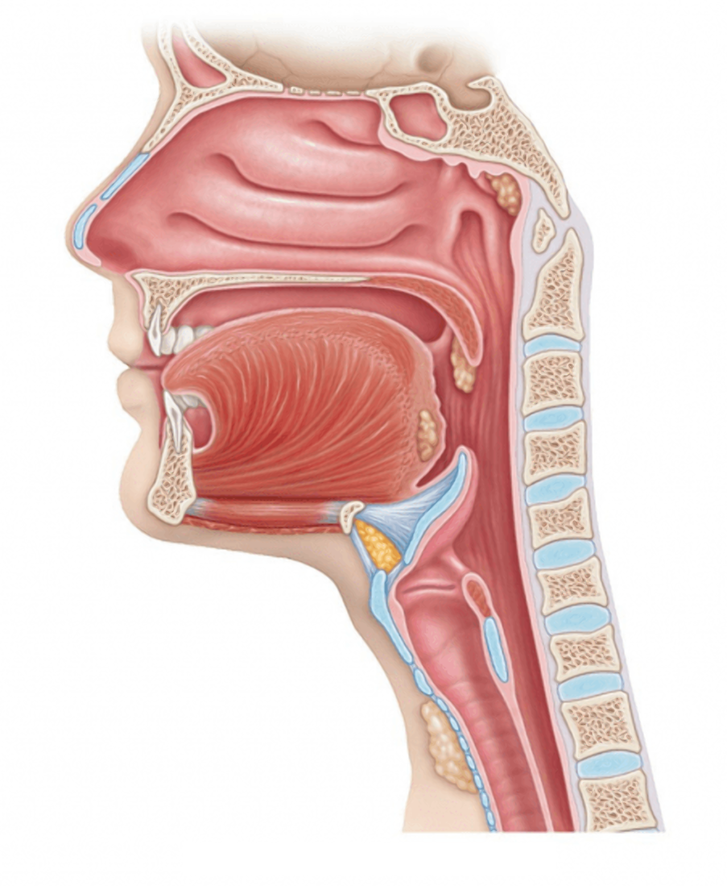
Corley youtu.be/IdYu9ClSCYE
| Sound | Production | Name |
|---|---|---|
| /p/ | release lips | bilabial stop |
| /t/ | release tongue from alveolar ridge | aveolar stop |
| /s/ | create friction at alveolar ridge | alveolar fricative |
| unvoiced | voiced |
|---|---|
| /p/ | /b/ |
| /t/ | /d/ |
| /s/ | /z/ |
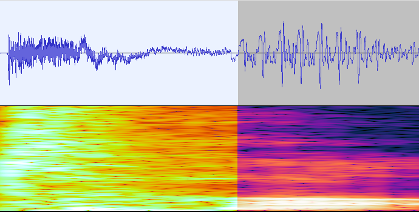
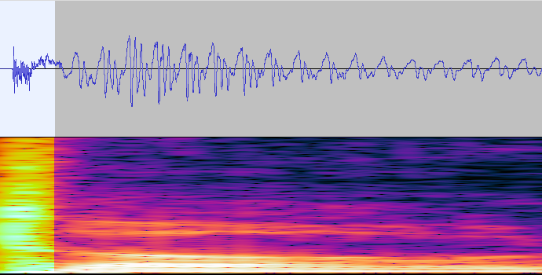
gift-kift
giss-kiss
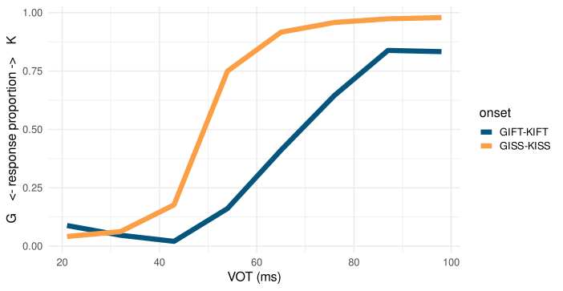
based on Ganong (1980)
| pair | difference |
|---|---|
| kilt–gilt | /k/–/g/ |
| tin–pin | /t/–/p/ |
| surf–serv | /f/–/v/ |
| miss–myth | /s/–/θ/ |
| ship–sheep | /ı/–/i:/ |
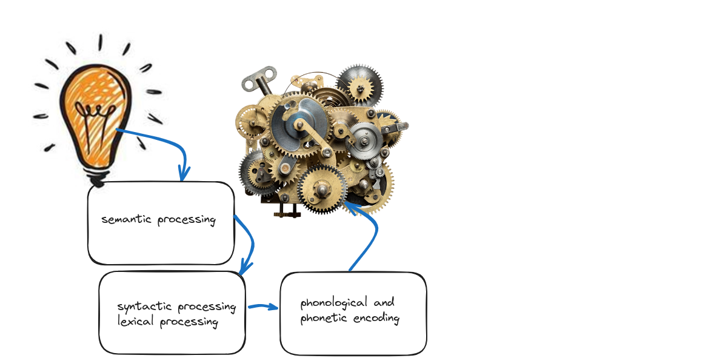
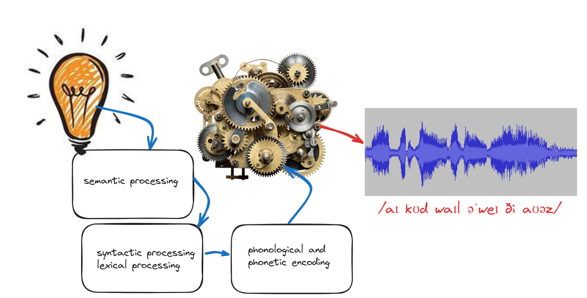
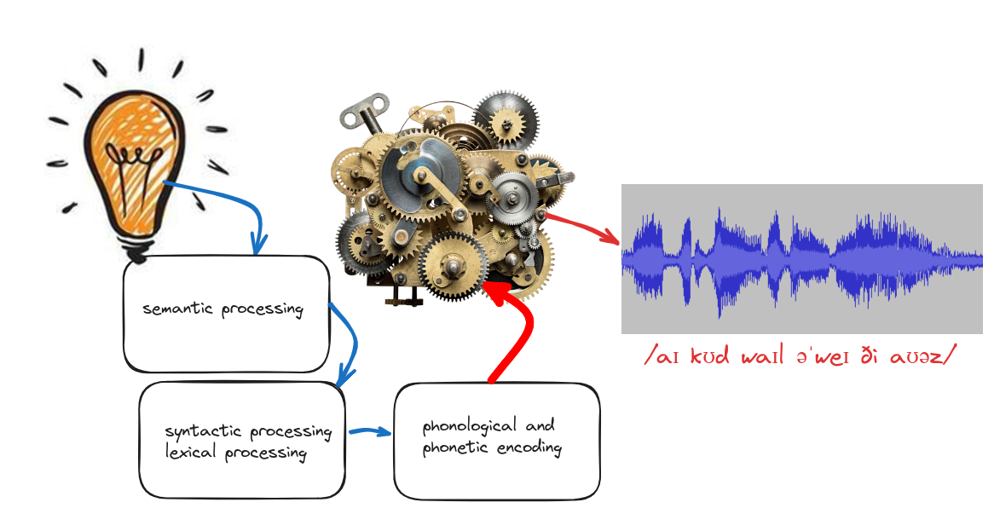
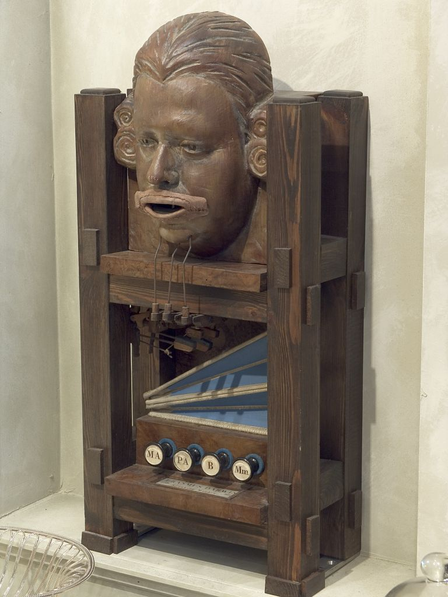
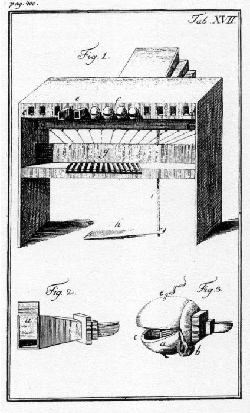
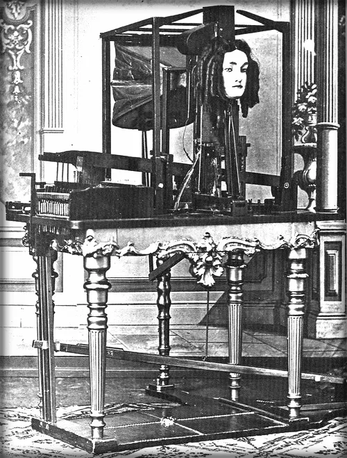
Erasmus Darwin (1771)
Kratzenstein (1880)
Faber (1845)
for more on this topic, see Ramsay (2019)
essentially the brain has to do what Dr Steinbeißer was doing:
map movements to sounds
basis of the dominant psychological model of articulation
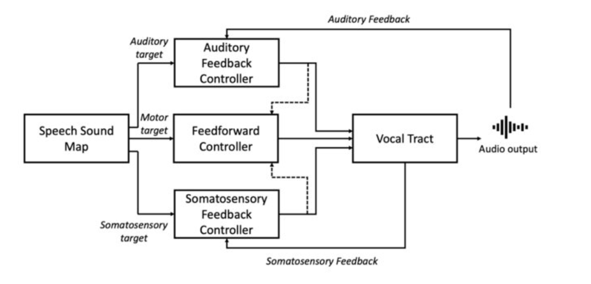
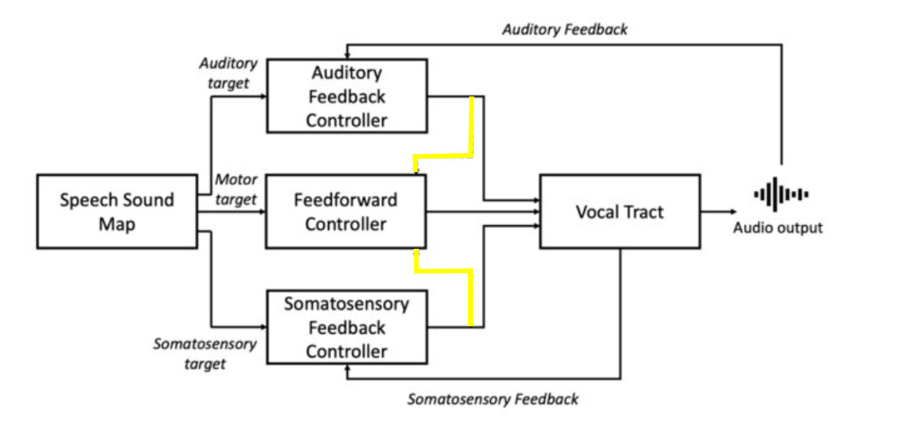
Bradshaw et al. (2021)
Tourville et al. (2008)
Tourville et al. (2008)
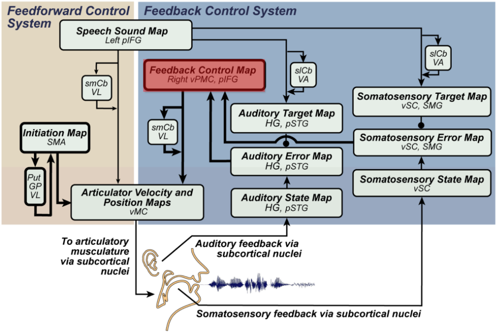
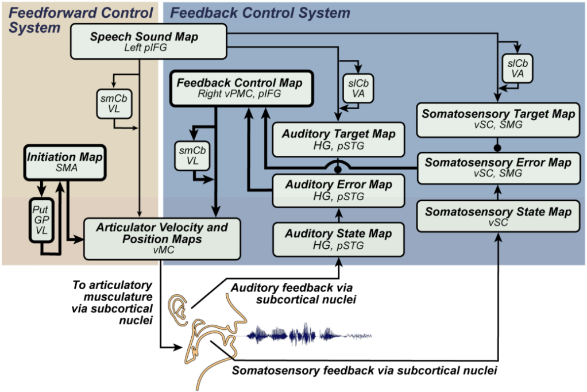
learn to make speech-like sounds
adapt to constraints
Beckmann Institute youtu.be/OCvJiqKZbz4